Chief of the Naval Staff (CNS)
Admiral Karambir Singh, PVSM, AVSM, ADC

Admiral Karambir Singh assumed command of the Indian Navy on 31 May 2019 as the 24th Chief of the Naval Staff.
Admiral Karambir Singh is an alumnus of the National Defence Academy, Khadakwasla. Commissioned into the Indian Navy in July 1980, he earned his wings as a helicopter pilot in 1981 and has flown extensively on the Chetak and Kamov helicopters. He is a graduate of the Defence Services Staff College, Wellington; College of Naval Warfare, Mumbai.
In his career spanning over 39 years, he has commanded Indian Coast Guard Ship Chandbibi, Missile Corvette INS Vijaydurg, as well as two Guided Missile Destroyers, INS Rana and INS Delhi. He has also served as the Fleet Operations Officer of the Western Fleet. Ashore, he has served at Naval Headquarters as the Joint Director Naval Air Staff, and as Captain Air and Officer-in-Charge of the Naval Air Station at Mumbai.
He has also served as member of the Aircrew Instrument Rating and Categorisation Board (AIRCATS).
On promotion to flag rank, the Admiral was appointed as the Chief of Staff, Eastern Naval Command. His other important flag appointments include Chief of Staff of the Tri-Services Unified Command at Andaman and Nicobar Islands and Flag Officer Commanding Maharashtra and Gujarat Naval Area (FOMAG).
In the rank of Vice Admiral, he has been Director General Project Seabird, in-charge of infrastructure development of the Navy’s expansive and modern base at Karwar. At the Integrated Headquarters Ministry of Defence (Navy), the Admiral has been the Deputy Chief of Naval Staff and, subsequently, the Vice Chief of Naval Staff. He was the Flag Officer Commanding-in-Chief, Eastern Naval Command at Visakhapatnam, prior taking over helm as the Chief of the Naval Staff on 31 May 19.
The Admiral enjoys cycling, running, swimming and golf.
Vice Chief of Naval Staff (VCNS)
Vice Admiral G Ashok Kumar, PVSM, AVSM, VSM
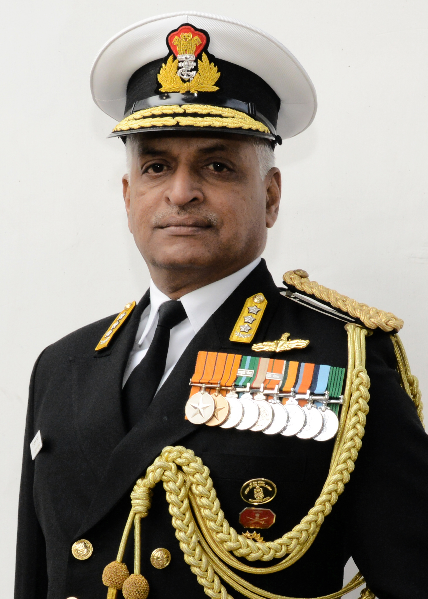
Vice Admiral G Ashok Kumar, PVSM, AVSM, VSM is an alumnus of Sainik School, Amravathi Nagar and National Defence Academy, Khadakvasla, Pune. He was commissioned into the Executive Branch of the Indian Navy on 01 Jul 1982.
The Admiral has held various challenging Staff and Command assignments during his distinguished Naval career spanning more than three decades. After having completed his specialisation in Navigation and Direction at Kochi in 1989, he served as the Navigating Officer of Indian Naval Ships Beas, Nilgiri, Ranvir and Vikrant. His other sea tenures include Commanding Officer of INS Kulish and Ranvir, and Executive Officer onboard INS Brahmaputra. Among his shore tenures, the important ones include Staff officer (Ops/ND) at Indian Naval Work-up team, Head of Training Team (Navy) at Defence Services Staff College, Wellington and as Defence Advisor at the High Commission of India in Singapore and the Chief Staff Officer (Operations) of the Western Naval Command.
On promotion to Flag rank, he has held the important assignments of Flag Officer Sea Training (FOST), Chief of Staff (COS) of Southern Naval Command and Flag Officer Maharashtra and Gujarat (FOMAG). In the rank of Vice Admiral he has been the Commandant of the National Defence Academy and the Deputy Chief of Naval Staff.
He is a graduate of Defence Services Staff College, Wellington and has attended the Army Higher Command Course at Mhow as well as the Expeditionary Operations Course at Quantico, Virginia, USA.
He is married to Mrs Geetha Ashok and they have two daughters.
Deputy Chief of Naval Staff (DCNS)
Vice Admiral MS Pawar, AVSM, VSM
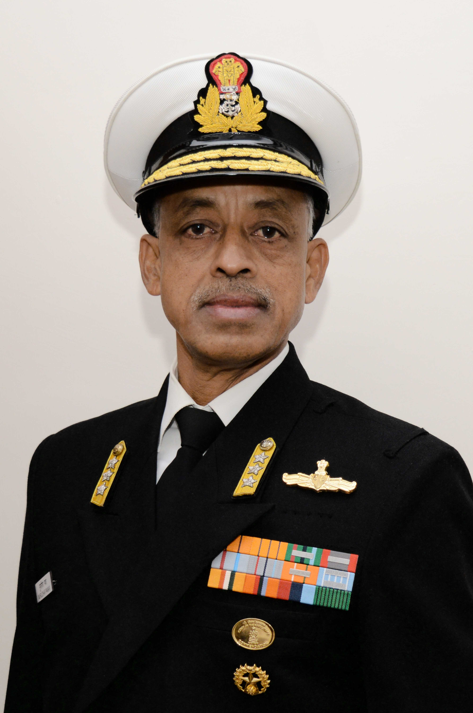
Vice Admiral MS Pawar, AVSM, VSM an alumnus of Sainik School Korukonda and the 60th course of National Defence Academy, Khadakwasla, Pune, was commissioned on 01 Jul 1982. During the ab initio training he was adjudged ‘Best all round Cadet’ and also stood first overall in the year long Sub Lieutenant Technical Courses. He later specialised in Navigation and Direction topping the coveted and highly competitive course.
The Admiral has held various challenging Staff and Command assignments during his distinguished naval career and has had wide ranging experience of over 25 years in sea going billets onboard diverse platforms ranging from small ships to aircraft carrier. He was the Navigating Officer of INS Magar during Op Pawan in Sri Lanka, the Fleet Navigating Officer of the Western Fleet during Kargil War and the Fleet Operations Officer of Western Fleet when the IN commenced anti piracy patrols in the Gulf of Aden. He has commanded Indian Naval Ships Nashak as the commissioning CO, Kuthar, Talwar and the Mauritius National Coast Guard Ship Vigilant - the senior ship of the No. 1 Patrol Vessel Squadron.
He was also the Commandant of the Mauritius National Coast Guard, during 2003. His Joint Service tenures include instructor at the National Defence Academy and Deputy Assistant Chief of Integrated Defence Staff (Maritime) at HQIDS. On promotion to Flag Rank, he has held the key assignments of Flag Officer Sea Training, Chief of Staff of Southern Naval Command and Flag Officer Commanding Maharashtra and Gujarat Area. As Vice Admiral he has been the Director General Project Seabird and Chief of Staff, Eastern Naval Command.
An alumnus of the Royal Naval Staff College, UK; College of Naval Warfare, Mumbai and National Defence College, Delhi, he has won awards at each of these institutions including the prestigious Herbert Lott Prize at Royal Naval Staff college, Greenwich, UK. The Admiral also holds a double MPhil in Defence and Strategic Studies from Universities of Mumbai and Madras. He was awarded commendations by the Chief of Naval Staff and also by the Commissioner of Police, Mauritius in 2003.
An accomplished long distance runner, the Admiral is married to Mrs Meena Pawar and they have two children.
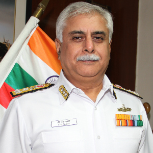
Chief of Materiel (COM)
Vice Admiral GS Pabby
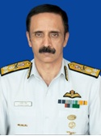
Chief of Personnel (COP)
Vice Admiral Ravneet Singh AVSM, NM
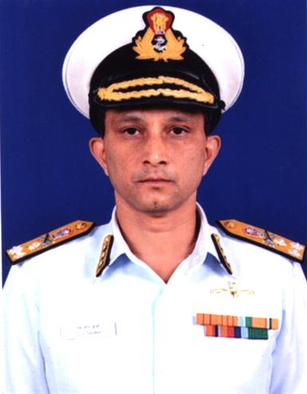
Controller of Warship Production & Acquisition (CWP&A)
Vice Admiral SR Sarma, AVSM, VSM
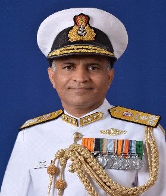
Inspector General Nuclear Safety (IGNS)
Vice Admiral SV Bhokare, AVSM, YSM, NM
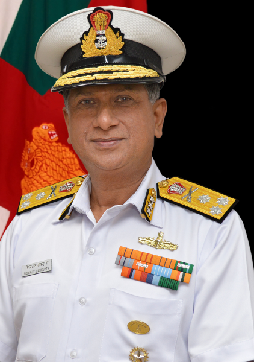
Controller of Personnel Services (CPS)
Vice Admiral Biswajit Dasgupta, AVSM, YSM, VSM
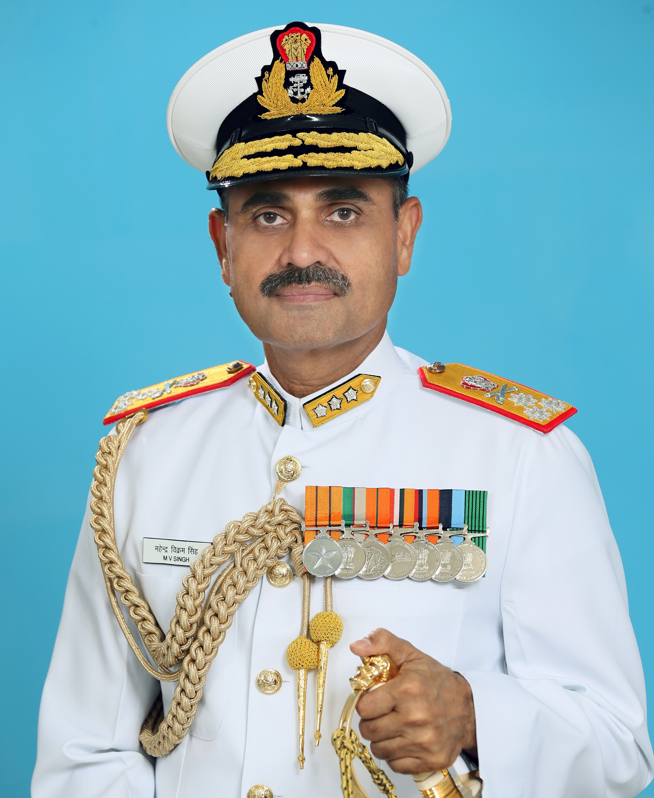
Director General Medical Services (Navy)
Surgeon Vice Admiral MV SINGH, AVSM, PHS DGMS (NAVY)
Director General of Naval Operations
Vice Admiral MA Hampiholi, AVSM, NM
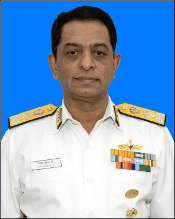
Western Naval Command
Vice Admiral Ajit Kumar P, PVSM, AVSM, VSM
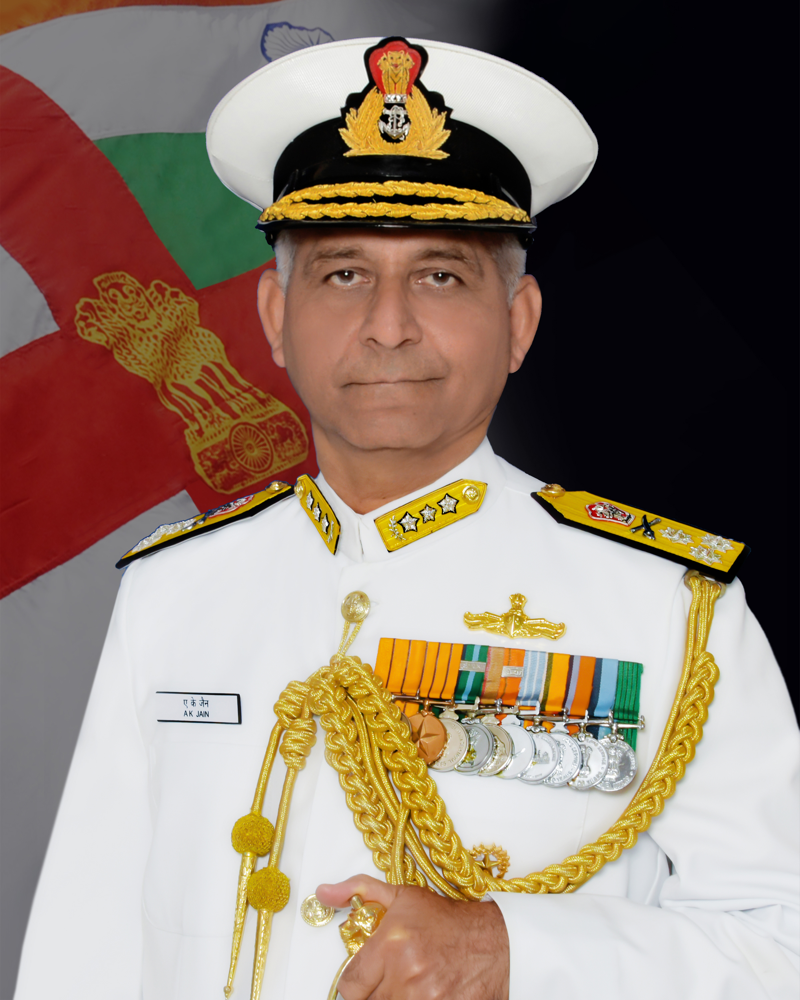
Eastern Naval Command
Vice Admiral Atul Kumar Jain, PVSM, AVSM, VSM
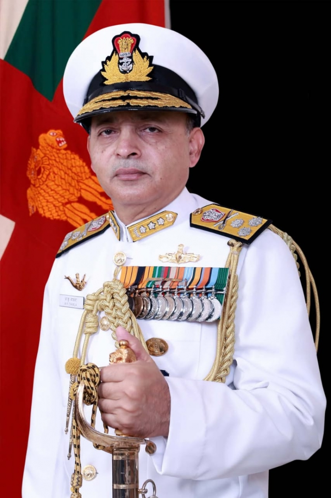
Southern Naval Command
Vice Admiral Anil Kumar Chawla, PVSM, AVSM, NM, VSM